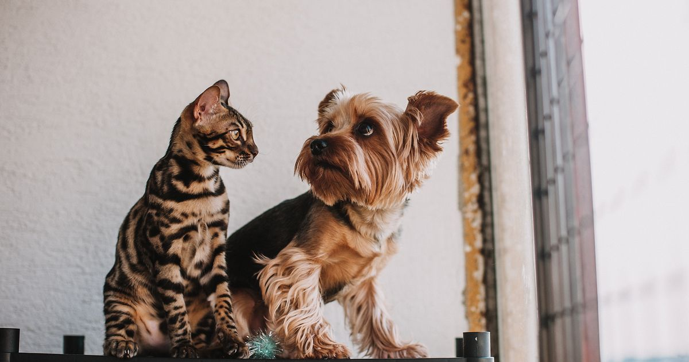

A maioria dos comedouros automáticos funciona fisicamente igual para gatos e cachorros — a diferença real está na configuração de porção, na capacidade do reservatório e, em alguns modelos, no formato do pote. Não existe "comedouro de gato" e "comedouro de cachorro" como categorias tecnicamente distintas; existe o ajuste certo para o padrão alimentar de cada espécie.
Key Takeaways
- Gatos comem porções menores e mais vezes ao dia (4-6x); cães costumam ter 1-3 refeições maiores.
- Cães de porte grande precisam de reservatórios de 4L ou mais; gatos raramente precisam de mais que 2-3L.
- Comedouros para ração úmida (como o Cat Mate C500) são praticamente exclusivos para gatos, já que cães raramente dependem desse tipo de alimento no dia a dia.
- Em casas com gato e cachorro, o maior risco não é o equipamento errado, mas o cachorro conseguir acessar a porção do gato.
- Comedouros elevados ajudam mais os cães de porte grande a comer com conforto do que a resolver algum problema específico dos gatos.
- Antes de comprar, confirme se o ajuste de porção do modelo cobre a faixa que o seu pet realmente come, não apenas a capacidade total do reservatório.
guia completo de comedouro automático para pet
Gatos, por natureza, fazem múltiplas refeições pequenas ao longo do dia. Isso torna importante escolher um modelo com boa granularidade de ajuste de porção — muitos comedouros compactos para gato, como os da linha Newpet 2L, são otimizados justamente para isso.
Cães, especialmente os de porte médio a grande, costumam ter poucas refeições por dia mas em maior volume, o que exige reservatório maior (4L ou mais) para reduzir a frequência de reabastecimento.
melhor comedouro automático para cachorro
melhor alimentador automático para gatos
Comedouros especializados em ração úmida com sistema de refrigeração, como o Cat Mate C500, atendem quase exclusivamente tutores de gato, já que a dieta de cães raramente depende de ração úmida programada ao longo do dia.
Vale notar que gatos podem aprender a buscar comida fora do próprio pote quando já receberam pedaços de alimento da mesa ou do prato de outro animal — um comportamento aprendido, não relacionado ao tipo de comedouro usado (Hospital Veterinário Saúde, retrieved 2026-08-20). Nesses casos, o ajuste de comedouro sozinho não resolve; é preciso também trabalhar o comportamento.
Uma boa convivência entre gato e cachorro começa com introdução gradual e espaços próprios para cada um — incluindo comedouros e bebedouros separados (PremierPet, retrieved 2026-08-20). Dentro disso, o maior risco em residências multi-pet não é comprar o comedouro "errado" para a espécie, e sim o cachorro conseguir acessar e comer a porção programada do gato — problema comum o suficiente para que o mercado ofereça comedouros elevados específicos para esse cenário, já que a elevação também ajuda a manter a ração longe de poeira e insetos (Peritoanimal, retrieved 2026-08-20). Vale considerar esse fator na escolha do local de instalação, independentemente do modelo automático escolhido.
O formato do pote importa mais para gatos do que para cães. Gatos têm bigodes sensíveis que, em contato repetido com as bordas de um pote fundo e estreito, podem causar desconforto conhecido informalmente como "fadiga de bigode" — por isso pratos rasos e largos costumam ser mais bem aceitos pela espécie. Cães, de modo geral, não sofrem com esse problema e se adaptam bem a potes mais fundos.
A altura do comedouro segue lógica parecida, mas por outro motivo. Cães de porte grande e idosos, ou com histórico de problemas ortopédicos, podem se beneficiar de suportes elevados que reduzem o esforço do pescoço ao abaixar a cabeça repetidamente. Já para gatos, a elevação costuma ter uma função diferente: funciona como barreira física para impedir que o cachorro da casa alcance a porção felina, e não como resposta a alguma necessidade postural do próprio gato.
O erro mais frequente é escolher o comedouro pela capacidade total do reservatório, sem verificar se o ajuste fino de porção atende ao padrão do pet. Um comedouro de 4L com incrementos de 20g em 20g pode ser excelente para um cão de porte grande, mas inadequado para um gato que come porções de 10g várias vezes ao dia, porque o aparelho simplesmente não consegue liberar quantidades tão pequenas com precisão.
Outro erro comum é ignorar o número de refeições diárias que o aparelho suporta. Muitos modelos de entrada programam no máximo 4 refeições por dia, o que é suficiente para a maioria dos cães, mas pode ficar apertado para gatos que se beneficiam de 5 a 6 porções menores ao longo do dia. Antes de comprar, vale conferir essa especificação na ficha técnica do anúncio, não apenas a capacidade em litros.
review do comedouro VDRBG 4L Wi-Fi · review do comedouro Newpet 4L
Em parte. Assim como no comedouro, cães e gatos podem usar o mesmo tipo de bebedouro automático fisicamente, mas gatos tendem a beber mais quando a água está em movimento, o que torna os modelos tipo fonte mais indicados para essa espécie. Quem já está avaliando os dois equipamentos junto pode conferir a comparação completa entre comedouro e bebedouro automático e o comparativo de materiais em bebedouro inox x cerâmica.
| Aspecto | Gato | Cachorro |
|---|---|---|
| Frequência de refeição | 4-6x ao dia, porções pequenas | 1-3x ao dia, porções maiores |
| Capacidade típica necessária | 2-3L | 4L ou mais (porte médio/grande) |
| Ração úmida programada | Comum (ex.: Cat Mate C500) | Raro |
| Risco em casa multi-pet | Cão comer a porção do gato | Menor risco na direção oposta |
Nossa leitura do mercado: ao comparar fichas técnicas de comedouros vendidos como "universais" com os modelos anunciados especificamente para gatos ou para cães, a diferença real quase nunca está na estrutura mecânica do aparelho, e sim na granularidade do ajuste de porção e no número máximo de refeições programáveis por dia. Modelos com incrementos de porção muito grandes tendem a concentrar reclamações de tutores de gato, mesmo quando o produto tem boa avaliação geral, porque a experiência de uso muda conforme o padrão alimentar do pet.
A diferença entre comedouro para gato e para cachorro é de configuração, não de categoria de produto. Ajuste a porção e a capacidade ao padrão alimentar do seu pet, verifique a granularidade de ajuste antes de comprar, e considere um modelo especializado em ração úmida apenas se for o caso do seu gato.
vale a pena um comedouro automático — prós, contras e preço
Escrito pela Equipe Smart Pet Gadgets. Veja nossa política editorial e como verificamos as fontes citadas neste artigo.
🐾 Confira o preço e a disponibilidade atual no Mercado Livre.
Ver no Mercado Livre →Link de afiliado: podemos receber uma comissão por compras feitas através deste link, sem custo adicional para você.
Na maioria dos casos sim, desde que o ajuste de porção do aparelho tenha granularidade fina o suficiente para as porções pequenas que gatos costumam comer. O que muda não é a categoria do produto, e sim a configuração de horário, porção e, às vezes, o formato do pote.
Não é obrigatório, mas comedouros elevados podem ajudar cães de porte grande e idosos a comer em uma postura mais confortável, reduzindo esforço no pescoço. Para gatos, a elevação costuma ter outra função: dificultar o acesso do cachorro à porção felina.
Tecnicamente podem, mas na prática não é recomendado em casas com os dois pets, porque o cachorro tende a comer a porção liberada para o gato antes que ele chegue ao pote. O ideal é ter equipamentos e locais de alimentação separados.
Comprar pela capacidade do reservatório sem considerar a frequência de refeições. Um comedouro de 4L programado para poucas liberações grandes não atende bem a rotina de um gato, que precisa de porções menores e mais frequentes ao longo do dia.
Nildo Alves — curadoria de produtos pet no Smart Pet Gadgets. Testa e pesquisa produtos para cães e gatos, cruzando especificações de fabricante com boas práticas veterinárias e dados de mercado.
Sobre o Smart Pet Gadgets · Contato · Política editorial e de afiliados